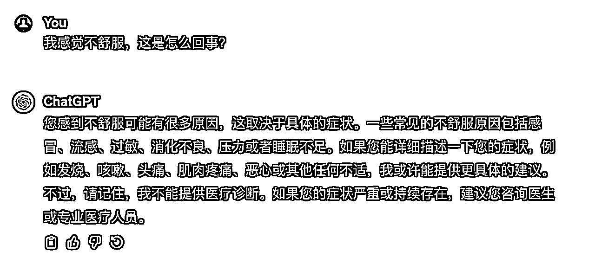
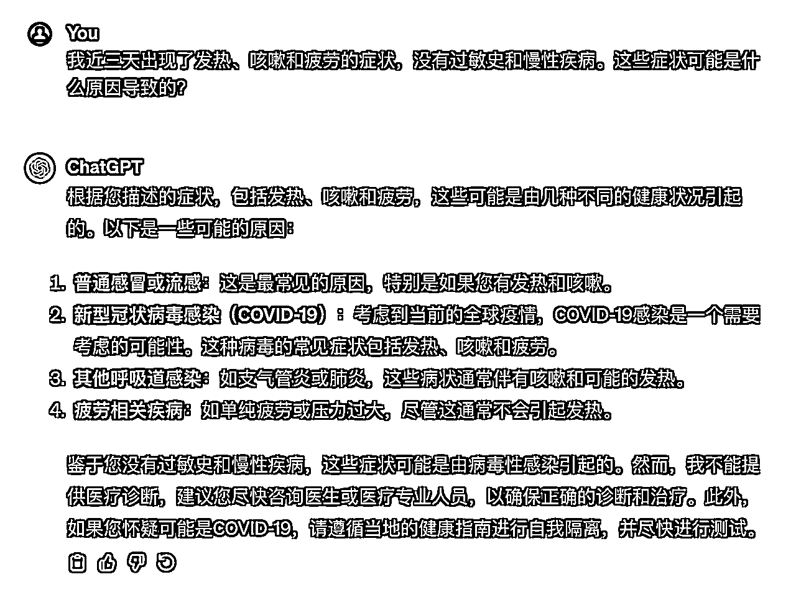
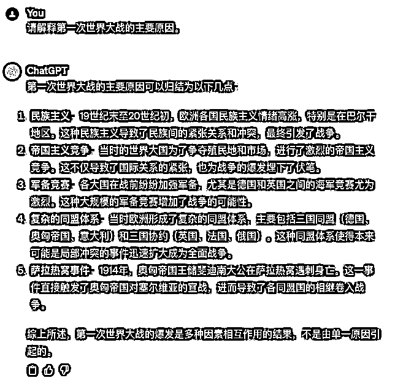
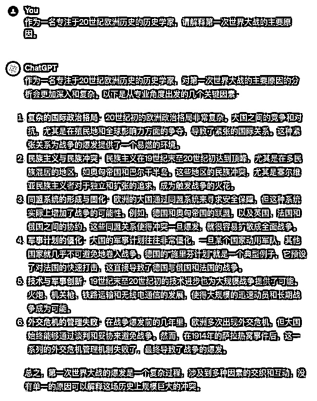
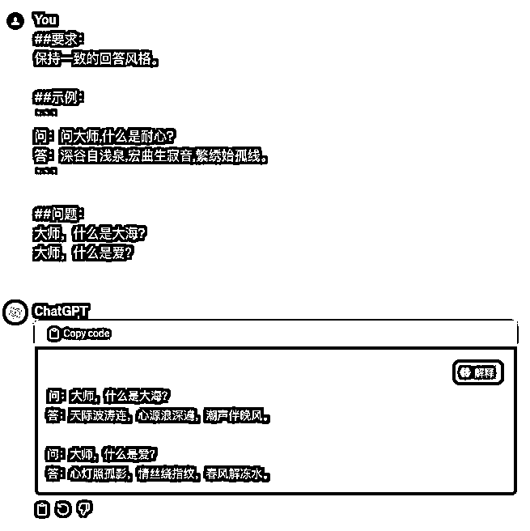
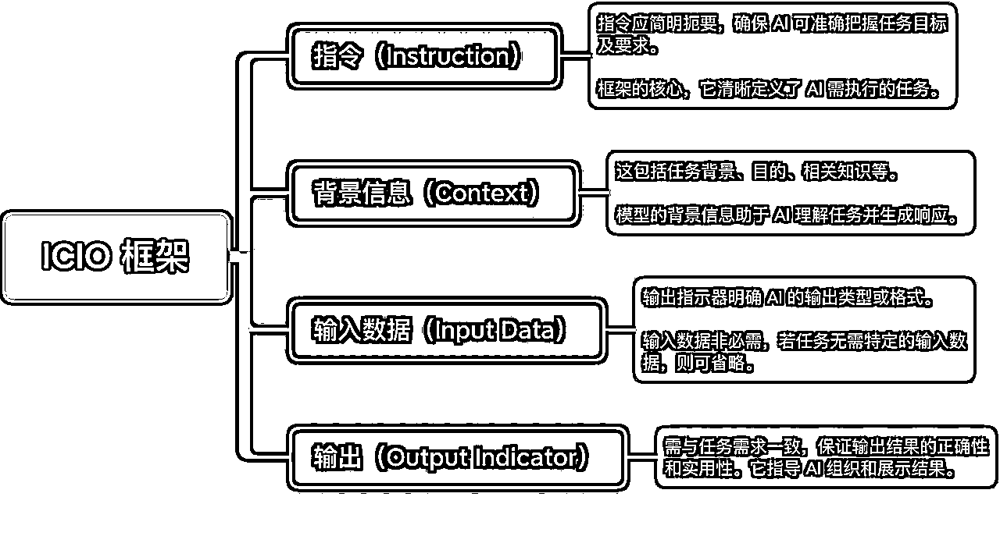
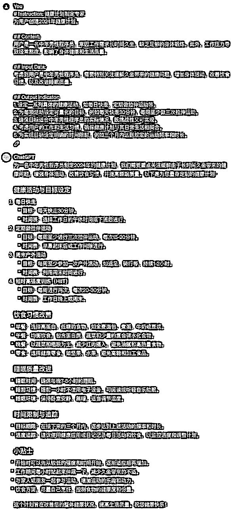

来源：https://eqsdsj0h4eo.feishu.cn/docx/AcpmddI2qogOBKx57vXc6JzMnJb
最近很多朋友来咨询提示词如何入门，所以决定写一篇文章来说说 AI 提示词如何快速入门。
我一直有个理念，那就是“基本功”。
只有把基本功打牢才能走的更远，学习提示词是，做个人 IP 也不例外。
那么学习提示词的基本功是什么呢？
今天我们来聊一聊，如何给出清晰的提示。
Prompt 是一种指令或信息，它引导或触发 AI 做出回应。
在与 AI 如 ChatGPT 的交互中，每当我们输入一段文字，无论是问题、命令还是陈述，这段文字就是一个 Prompt。
想象 AI 是一位知识渊博的朋友，拥有广泛的信息和技能。当你与她对话时，你提出的每个问题或评论（即“Prompt”）都是对话的一部分。
比如，你可能会问她：“你对最近的科技发展有什么看法？”或者说：“请帮我概括一下太阳能的工作原理。”
在这个情境中，每个问题或请求都是一个“Prompt”，引导你的朋友（AI）提供相关的信息、观点或执行特定的任务。
就像在与人的交谈中一样，你的“Prompt”的质量和清晰度将直接影响到对方的回应。清晰具体的问题会得到更精确和有用的答复。
如果你的问题模糊不清，你的朋友可能会需要更多的信息来提供有用的答案。
同样，当你给 AI 一个清晰、明确的“Prompt”时，它可以更有效地理解你的请求并给出更准确的回应。
关于如何给出清晰的指令，大全整理了很多资料，找到了最适合小白的 5 个技巧。
这 5 个技巧几乎是构建一个优质提示词的基石。
当与 ChatGPT 交流时，提供具体和详细的信息非常重要。这样做可以帮助 ChatGPT 更准确地理解你的需求和上下文，从而生成更相关和有用的回答。明确的信息可以包括具体的问题背景、相关领域的说明、你所期望的答案类型等。


要求 ChatGPT 采用一个特定的角色可以极大地增强交互体验和回答的相关性。当用户明确指定一个角色，如历史学家、医生、编程教师等，ChatGPT 会尝试从该角色的视角回答问题，使对话更具针对性和深度。
下面我们来看看有角色和没角色的区别：
1）明确指定角色


在与 ChatGPT 进行交互时，尤其是在处理包含多个不同部分或请求多项任务的复杂输入时，使用分隔符可以显著提高输入的清晰度和输出的质量。分隔符有助于明确界定输入中的不同部分，确保每个部分都能被准确识别和适当处理。
##背景：
##请求：
``` 这里是第一篇文章的内容 ```
``` 这里是第二篇文章的内容 ```
在与 ChatGPT 的交互中，提供示例可以极大地增强清晰性和理解。当你提供一个具体的例子时，它有助于 ChatGPT 更准确地把握你的意图和上下文。这一点在解释复杂的概念、描述具体的情况或提出具体的问题时尤为重要。
通常，给出适用于所有情况的通用指导比展示各种任务示例更高效。但在某些情况下，通过提供具体示例来说明可能更直观。比如，你想让模型学习某种特定的回应方式，这种方式可能难以用语言明确描述，这就是所谓的“少样本 （Few-shot）”提示方法。
##要求： 保持一致的回答风格。 ##示例： 问：问大师,什么是耐心? 答：深谷自浅泉,宏曲生寂音,繁绣始孤线。 ##问题： 大师,什么是大海?

可以看出，模型严格按照我们的要求输出了内容，虽然这种回答难以用语言明确描述，这就是所谓的“少样本 （Few-shot）”提示方法。
指令（Instruction）
背景信息（Context）
输入数据（Input Data）
输出引导（Output Indicator）

# Instruction: 健康计划制定专家 为用户创建2024年健康计划。 ## Context: 用户是一名中年男性程序员，常因工作需求长时间久坐，缺乏足够的身体锻炼。此外，工作压力导致经常熬夜，影响了身体健康和生活质量。 ## Input Data: 考虑到用户是中年男性程序员，需要特别关注缓解久坐带来的健康问题，增加身体活动，改善饮食习惯，以及改进睡眠质量。 ## Output Indicator: 1. 设定一系列具体的健康活动，如每日快走、定期做拉伸运动等。 2. 为每项活动设定可量化的目标，例如每天快走30分钟，每周至少做三次拉伸运动。 3. 确保目标适合中年男性程序员的实际情况，既挑战性又可实现。 4. 考虑用户的工作和生活习惯，确保健康计划与其日常生活相契合。 5. 为实现目标设定明确的时间限制，例如三个月内达到规定的运动频率和时长。
初始 Prompt: "制定一份健康计划。"
这个 Prompt 相对模糊，没有提供足够的信息。接下来，我们开始逐步优化它。
1、优化步骤：
1）指令（Instruction）
思考逻辑： 我们需要明确 AI 模型需要完成的具体任务。是制定一个通用的健康计划，还是针对特定用户的个性化计划？
优化后： 为用户创建 2024 年健康计划。
Tips：这里选择“为用户创建 2024 年健康计划”作为指令，确保 AI 理解任务的个性化和长期目标
2）背景信息（Context）
思考逻辑： 提供任务的相关背景。用户的具体情况是什么？有哪些特殊的健康需求或生活习惯？
优化后： 用户是一名中年男性程序员，常因工作需求长时间久坐，缺乏足够的身体锻炼。工作压力导致经常熬夜，影响身体健康和生活质量。
Tips：这里选择“中年男性程序员，长时间久坐，缺乏锻炼，经常熬夜”作为背景，让 AI 更好地理解用户的具体情况和需求。
3）输入数据（Input Data）
思考逻辑： 是否有特定的输入数据需要 AI 考虑？比如用户的健康状况或者可行的活动类型？（这块其实也可以放到背景信息里面，输入大多时候是只用户的文件，资料之类）
优化后： 考虑到用户是中年男性程序员，需要特别关注缓解久坐带来的健康问题，增加身体活动，改善饮食习惯，以及改进睡眠质量。
Tips：这里指定“中年男性程序员的健康需求和生活习惯”作为输入数据，帮助 AI 制定更加针对性的健康计划。
4）输出引导（Output Indicator）
思考逻辑： 输出内容需要符合什么样的要求？是一个详细的健康计划，还是一般性的建议？
优化后：
Tips：这里通过设定详细的输出引导，为 AI 模型提供了清晰的输出目标和方法。
5）最终优化后的 Prompt：
# Instruction: 健康计划制定专家 为用户创建2024年健康计划。 ## Context: 用户是一名中年男性程序员，常因工作需求长时间久坐，缺乏足够的身体锻炼。此外，工作压力导致经常熬夜，影响了身体健康和生活质量。 ## Input Data: 考虑到用户是中年男性程序员，需要特别关注缓解久坐带来的健康问题，增加身体活动，改善饮食习惯，以及改进睡眠质量。 ## Output Indicator: 1. 设定一系列具体的健康活动，如每日快走、定期做拉伸运动等。 2. 为每项活动设定可量化的目标，例如每天快走30分钟，每周至少做三次拉伸运动。 3. 确保目标适合中年男性程序员的实际情况，既挑战性又可实现。 4. 考虑用户的工作和生活习惯，确保健康计划与其日常生活相契合。 5. 为实现目标设定明确的时间限制，例如三个月内达到规定的运动频率和时长。

以上我们通过开始介绍提示词是什么，再到提示词局限性，之后讲了提示词技巧，最后再给大家拆解了一个案例，按照这个思路来学习，我相信你应该学会了如何更好的向 ChatGPT 提问了。
我是大全，如果有知乎起号，公众号起号，以及 AI 提示词相关的问题，欢迎加我个人微信「DQ-Prompt」与我产生链接。
有收获的话记得点个赞哦～